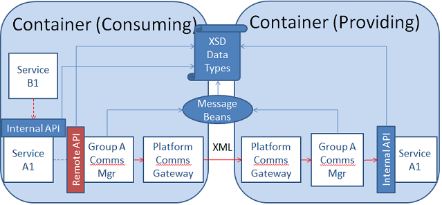

Communication Group Manager
The Platform Comms Gateway manages access from the XMPP server to the service bundles by passing/receiving messages (see Figure 28). As already stated, we don't want every single Service Bundle to register with the XC Manager Component. Rather, it is preferable that a Comms Group Manager registers and manages access to each of its end point services. This removes the need for developers writing custom XMPP code in their services. It is this Comms Group Manager that handles the XMPP communication and accesses the bundles. This component can operate in
- Server mode: it receives messages and forwards them to the end point services through their internal API
- Client mode: it implements the remote API of each service to send messages
